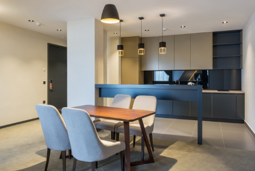

@Aquila_Connect
Follow us on social media
Find out first about our latest updates, news and events by following us on social media.
Find out first about our latest updates, news and events by following us on social media.